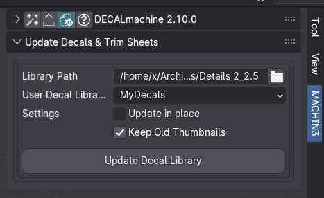
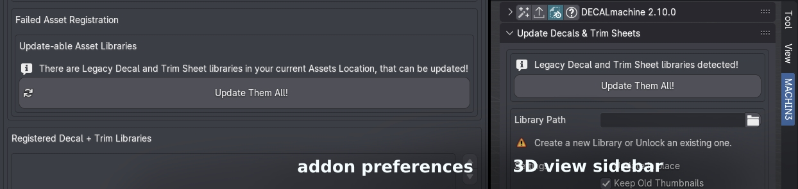
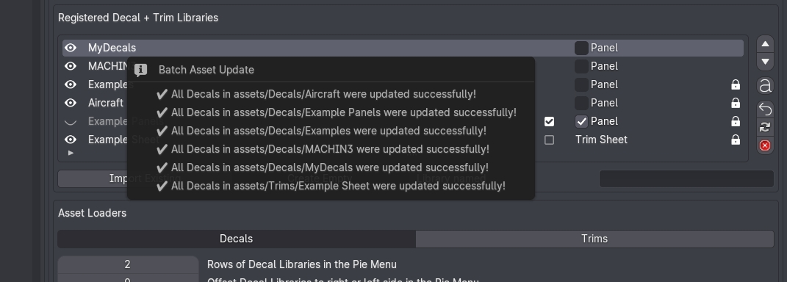
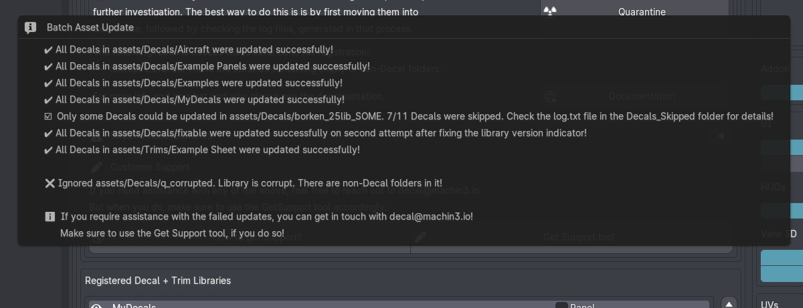

Update Decal Libraries
Decals created with earlier DECALmachine versions, such as 1.8-2.5 need to be updated before they can be used in DECALmachine 2.9+.
If you use DECALmachine 2.9+ in Blender 4, you need to also update Decals created in DM up to 2.8.
The reason for this is, that once Blender introduces changes to materials with an update, in particular to the Principled BSDF shader node, DECALmachine will try to make use of any new shader inputs, so they are properly supported for Material Matching.
In addition to new shader inputs, Blender 4 also introduced foldable panels on shaders and node groups, and DECALmachine 2.9+ makes full use of these in its decal- or trimsheet node groups.
 Decal Node Groups with panels in Blender 4
Decal Node Groups with panels in Blender 4
Changes like these usually require an update of all previously saved decal assets and libraries.
Keep in mind
Any existing .blend files using legacy decals or trimsheets, should also be updated, which is done using a different tool called Update Blend Files.
Updating Individual Decal or Trimsheet Libraries
Decal and Trimsheet libraries are basically just folders containing sub-folders, one for each Decal or Trim Decal.
Each library folder contains at least one meta-file as a version indicator, and optionally a few others.
Trimsheet libraries also contain the trimsheet texture maps.
To update a specific decal library, you can do so in the DECALmachine update panel in the 3D views sidebar panel.

By default you also select a target Decal library, that has been registered, where the updated decals will be added to. Empty libraries can be created for that purpose in the addon preferences.
You can however also chose to update the source library in place.
Note
You can also import a legacy library as is, and again from the addon preferences. This moves it into your chosen assets location. From there, you can use the Batch Updater.
Batch Updating
For convenience, the Batch Updater allows you to update everything in your chosen assets location at once using just a single button press.
You can use the Batch Updater directly from the addon preferences or from the sidebar panel.
It will only be revealed when update-able assets are detected in your assets location.

Updating will take a few seconds, but can take a few minutes too, depending on the amount and size of your decal and trimsheet assets in the assets location. Upon completion, as popup message will be shown.

Encountering Issues
Updating can go wrong for a number of reasons.
DECALmachine 2.10+ will deal with any potential issues a lot more gracefully, than previous versions.

Ambiguous libraries, so libraries with multiple version indicator files, can now be fixed automatically, as long as nothing else is wrong with them.
In addition, if any goes wrong with any specific decal in a library while attempting to update it, DECALmachine will move it out of the Decals folder in your assets location, and move it into the Decals_Skipped location.
A log file will be created too, detailing the reason why a specific decal failed to update.
Some libraries will have to be ignored completely, and the Quarantine tool allows you to move them into a dedicated location for further investigation.
Once you've updated your Decal libraries, you can proceed to the next page, to learn how to update .blend files using legacy Decals too.